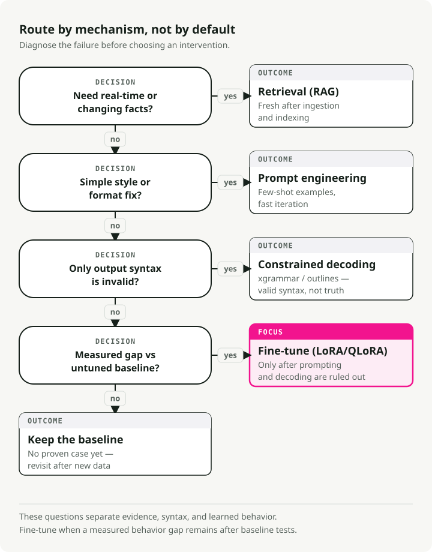
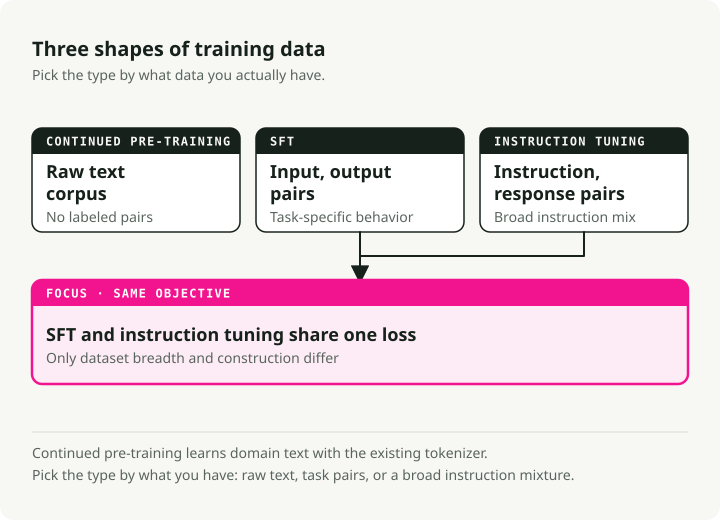
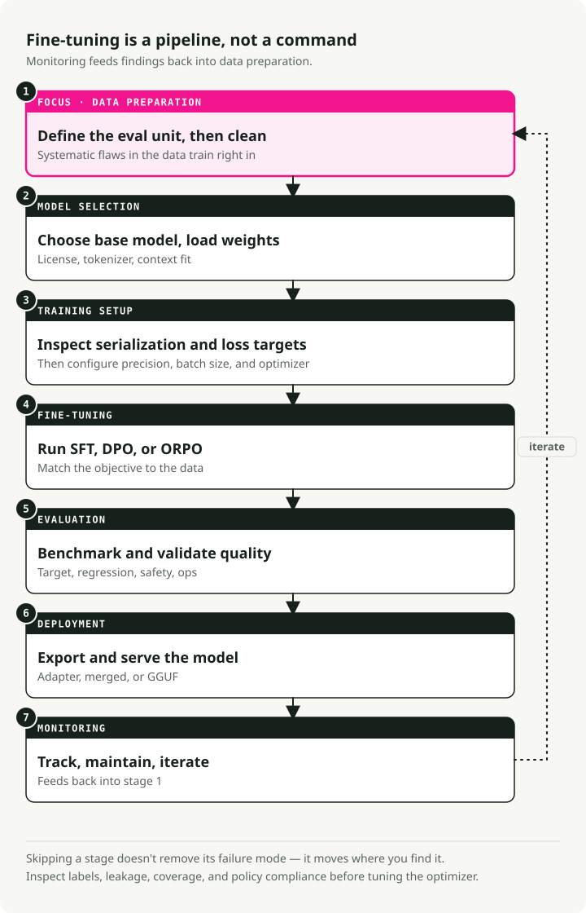
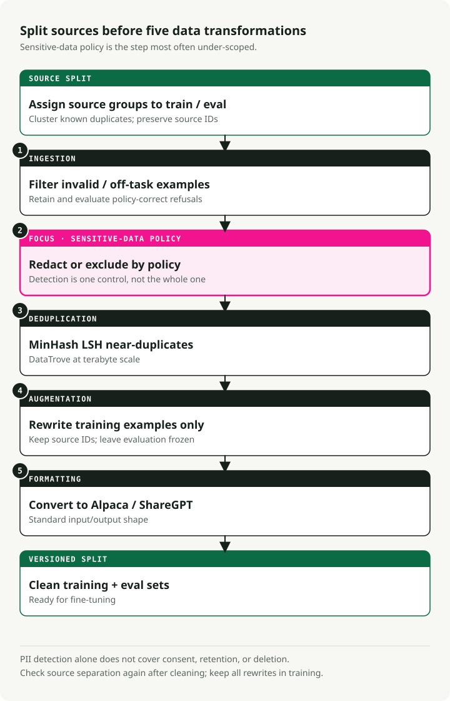
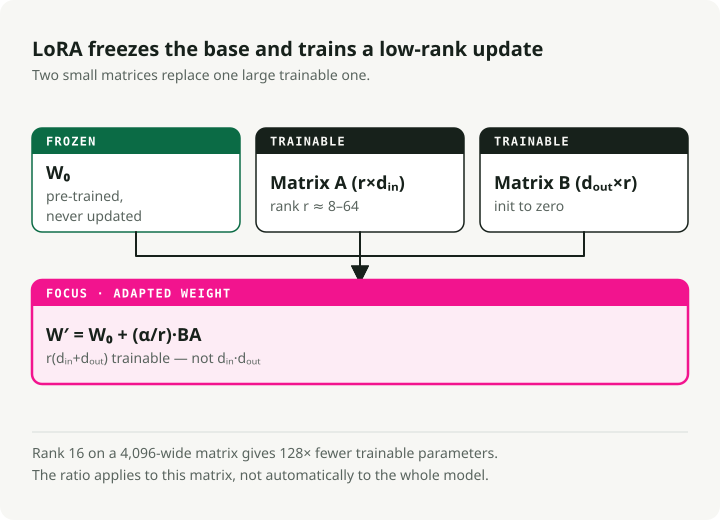
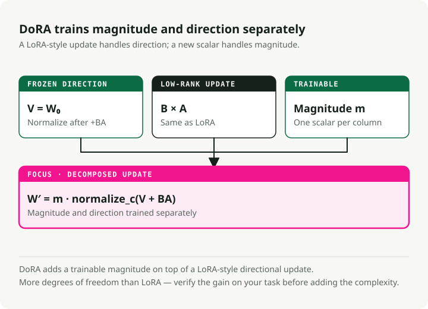
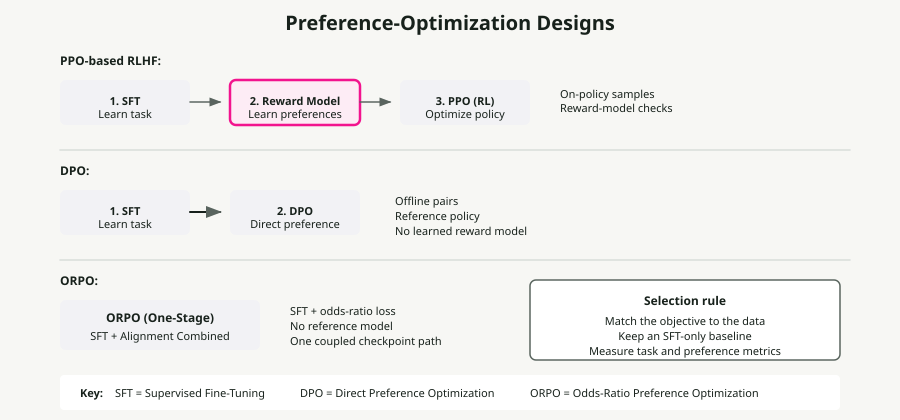
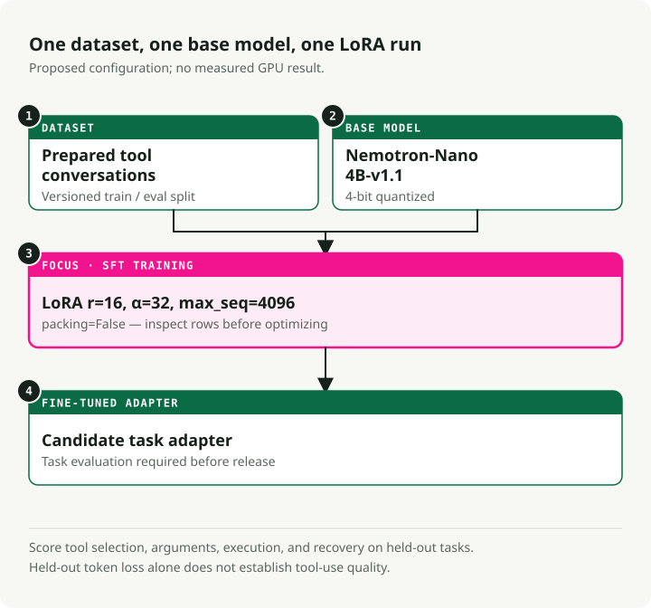
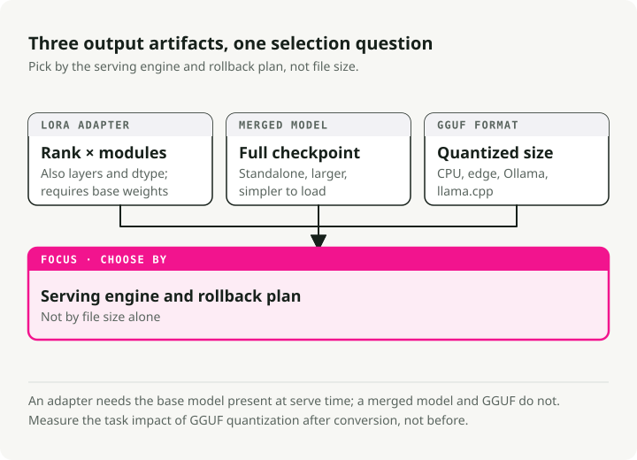

LLM Fine-Tuning Guide: LoRA, QLoRA, DoRA, Unsloth, Axolotl, and Deployment
Most fine-tuning projects I've seen fail not in training, but in the steps before and after it: bad data, the wrong base model, no real eval. The actual training is the easy part. This guide is what I wish I'd had before my first serious fine-tune — when to do it, when not to, the methods that work today (LoRA, QLoRA, DoRA, ORPO), and how to get a model from a notebook to a serving endpoint.
TL;DR: Fine-tune when prompting and RAG cannot reliably change behavior, format, latency, or cost. Start with LoRA or QLoRA, build a clean dataset before touching hyperparameters, evaluate against a held-out task set, and only then decide whether full fine-tuning is worth the infrastructure cost.
Should you fine-tune at all?
Before you spend GPU hours, decide whether fine-tuning is the right tool for the problem in front of you.

Fine-tuning vs RAG
Do not fine-tune just to add "knowledge." Use this split instead:
| Feature | Fine-Tuning | RAG (Retrieval-Augmented Generation) |
|---|---|---|
| Core Function | Alters internal weights to teach skills, styles, or behaviors | Provides external, up-to-date context at inference time |
| Best For | • Specific conversational styles • Complex instruction following • Domain-specific reasoning |
• Rapidly changing data (news, stock prices) • Reducing hallucinations (grounding) • Citing sources |
| Knowledge Handling | Internalizes patterns, not facts | Retrieves facts from external knowledge base |
| Update Frequency | Requires retraining for updates | Updates immediately with new documents |
Fine-tuning vs prompt engineering
Modern LLMs are remarkably responsive to well-crafted prompts. Exhaust prompting before you reach for fine-tuning.
| Aspect | Fine-Tuning | Prompt Engineering |
|---|---|---|
| Setup Cost | High (data curation, GPU compute, iteration) | Low (iterative prompt refinement) |
| Flexibility | Locked after training | Change anytime without retraining |
| Format/Style | Best for complex, consistent output formats | Good for simple formatting with few-shot examples |
| Latency | Lower (no long system prompts) | Higher (context tax on every request) |
| Best For | Complex behaviors, distillation, cost at scale | Rapid iteration, changing requirements |
[!TIP] Try prompting first Start with few-shot examples in the prompt. If the behavior is still inconsistent, try SGR before reaching for fine-tuning.
Fine-tuning vs Schema-Guided Reasoning (SGR)
Libraries like xgrammar and outlines constrain model outputs at inference time using finite state machines. They work with base models out of the box, with no training required.
SGR's value is not just structured outputs. It's consistency: the same input shape gives you the same output shape every time, without retraining anything. When prompting alone produces inconsistent results, SGR pins the output pattern at decode time.
| Aspect | SGR (No Fine-Tuning) | Fine-Tuning |
|---|---|---|
| Setup | Immediate—define schema, deploy | Requires data curation, GPU compute, iteration |
| Consistency | Guaranteed structure, reliable patterns | Learned behavior (may still vary) |
| Flexibility | Change schema anytime without retraining | Locked after training |
| Latency | Slight overhead (model may "fight" schema) | Lower (model naturally outputs format) |
| Best For | Structured outputs, consistent behavior | Complex reasoning, deep behavioral changes |
A practical order:
- Start with prompting and few-shot examples for basic formatting.
- Add SGR (
xgrammaroroutlines) when the format is inconsistent. - Fine-tune only when you need behavioral changes that a schema can't enforce.
Quick reference: matching problems to solutions
| Challenge | Best Solution | Why? |
|---|---|---|
| Missing knowledge | RAG | Models hallucinate facts. Retrieval provides grounded, up-to-date context |
| Wrong format/tone | Prompt Engineering | Modern models follow style instructions well via few-shot examples |
| Inconsistent outputs | SGR (xgrammar) | Guaranteed structure and reliability without training |
| Complex behavioral changes | Fine-Tuning (SFT) | Deep persona, reasoning patterns, or multi-step workflows |
| Safety/preference | Alignment (DPO) | When outputs are correct but don't match preferences |
| Latency/cost at scale | Distillation (SFT) | Train smaller student model on larger teacher's outputs |
| Reduce model size | Quantization | No training—compress weights (FP16→INT4) for faster inference |
When the math actually works
Fine-tuning pays off when traffic is high and requirements are stable. A solid RAG setup often carries 2,000 tokens of context on every call: system prompt, retrieved docs, few-shot examples. That's a context tax you're paying on every request.
A fine-tuned model absorbs most of those instructions into its weights, so the prompt drops from ~2,000 tokens to ~50. At enough volume, that recovers the training compute in a few weeks.
[!TIP] The hybrid setup The pattern I keep seeing in production: a fine-tuned 8B model paired with a small RAG retriever for facts. It often beats a 70B+ prompted model on both accuracy and cost.
Types of fine-tuning
There are three main shapes fine-tuning can take. They differ in what kind of data they need and what they teach the model.

1. Continued pre-training (unsupervised)
You train the base model on more raw text, with no labels. It keeps doing next-token prediction, just like during the original pre-training run.
When to use it:
- The domain has vocabulary the base model never saw (medical, legal, internal codebases).
- You have piles of domain text but no labeled (input, output) pairs.
- The base model fumbles domain-specific terminology.
Example: training on millions of clinical notes so the model picks up medical abbreviations, drug names, and clinical workflows.
2. Supervised fine-tuning (SFT)
SFT trains on labeled (input, output) pairs. You show the model the exact output you want for each input.
When to use it:
- You have a specific task with a clean input/output format.
- You have quality labeled data, even in small amounts.
- You need predictable behavior on a known shape of input.
Example: training on (SQL query description, SQL code) pairs for text-to-SQL.
{
"input": "Get all users who signed up last month",
"output": "SELECT * FROM users WHERE signup_date >= DATE_SUB(NOW(), INTERVAL 1 MONTH)"
}
3. Instruction tuning
Instruction tuning is a special case of SFT designed to make models follow a wide variety of natural-language instructions. The training data is (instruction, response) pairs across many different tasks.
When to use it:
- You want a general-purpose assistant (like ChatGPT or Claude).
- The model needs to handle varied, open-ended requests.
- You're building a chat interface.
Example: training on thousands of diverse instructions like "Summarize this article," "Write a poem about X," "Explain Y in simple terms."
Comparison
| Aspect | Continued Pre-training | SFT | Instruction Tuning |
|---|---|---|---|
| Data | Raw text | (input, output) pairs | (instruction, response) pairs |
| Labels | None (unsupervised) | Task-specific | Diverse tasks |
| Goal | Domain knowledge | Specific task behavior | Follow any instruction |
| Data Volume | Large (millions of tokens) | Small-Medium (500-10k examples) | Medium-Large (10k-100k examples) |
[!NOTE] What people actually do Most practitioners use SFT for specific tasks and instruction tuning for chat assistants. Continued pre-training is rarer because it needs huge amounts of domain text and a lot of compute.
The 7-stage fine-tuning pipeline
Fine-tuning is a pipeline, not a single command. Each stage has its own failure modes, and skipping one usually shows up as a bad model later.

Each stage builds on the previous one:
- Data preparation — Clean, deduplicate, and format your data (highest-impact step)
- Model selection — Choose the right base model and load weights
- Training setup — Configure hardware, hyperparameters, and optimization strategy
- Fine-tuning — Run SFT, DPO, or ORPO training
- Evaluation — Benchmark performance and validate quality
- Deployment — Export and serve your model
- Monitoring — Track performance, maintain, and iterate
[!WARNING] Data is the foundation Stage 1 (data preparation) is the highest-leverage step. Algorithms cannot patch flaws you trained on. 500-1,000 carefully curated examples will usually beat 50,000 noisy ones.
Stage 1: Data preparation
Most fine-tuning projects fail here, not in training. Modern data prep is more than running a regex over CSVs.

The 5-stage data pipeline
Teams running this seriously rely on tools like DataTrove (Hugging Face) and Distilabel (Argilla) instead of bespoke scripts.
1. Ingestion and filtering
- Action: drop refusals ("I cannot answer that"), broken UTF-8, and non-target languages.
- Tools: Trafilatura for extraction, FastText for language ID.
2. PII scrubbing (mandatory for enterprise)
- Action: detect and redact emails, IP addresses, and phone numbers before training.
- Tools: Microsoft Presidio or scrubadub.
- Why: training on customer PII is a security incident waiting to happen.
3. Deduplication (MinHash LSH)
- Action: drop near-duplicates so the model does not memorize them.
- Tools: DataTrove handles terabyte-scale processing well.
4. Synthetic augmentation
- Action: use a stronger teacher model (GPT-4o, DeepSeek-V3) to rewrite raw data into clean instruction-response pairs.
- Tools: Distilabel.
- Why it matters: this is usually where the biggest quality boost comes from.
5. Formatting
- Action: convert to a standard format (Alpaca or ShareGPT).
Data format examples
Alpaca format (instruction-following):
{
"instruction": "Summarize the following text.",
"input": "The text to be summarized...",
"output": "This is the summary."
}
ShareGPT/ChatML format (conversational):
{
"conversations": [
{ "from": "user", "value": "Hello, who are you?" },
{ "from": "assistant", "value": "I am a helpful AI assistant." }
]
}
What actually matters
- Quality over quantity. 500-1,000 carefully curated examples beat 50,000 noisy ones.
- Cleanliness. Drop irrelevant text, normalize whitespace, keep formatting consistent.
- Balance. Spread coverage across topics so the model doesn't overfit to whichever segment dominates.
- PII scrubbing is non-negotiable for any production system.
Stage 2: Model selection and hardware
Picking the base model and understanding the GPU floor decide what you can actually train.
Hardware by model size
Memory is the hard floor. The numbers below assume training, not inference.
| Tier | Hardware Config | Capability | Use Case |
|---|---|---|---|
| Enterprise Standard | 8x NVIDIA H100 (80GB) | Full Fine-Tuning | Training 70B models with long context (32k+) at max speed |
| Minimum Viable (Pro) | 4x NVIDIA A100 (80GB) | QLoRA / LoRA | Fine-tuning Qwen 72B or Llama 70B in 4-bit |
| Local R&D | 4x RTX 6000 Ada (48GB) | QLoRA | On-prem workstation for data privacy requirements |
| Hobbyist/Indie | 1-2x RTX 3090/4090 (24GB) | QLoRA | Fine-tune 7B-32B models with parameter-efficient methods |
[!TIP] Consumer GPUs go further than you'd think With QLoRA and Unsloth, a single RTX 4090 (24GB) can fine-tune models up to 32B parameters. The 3090 is still solid for 7B-13B training. The 24GB VRAM tier is enough for most serious work outside long-context territory.
[!NOTE] Why H100s The headline reason isn't VRAM, it's FP8 precision. H100s support native FP8 training, which roughly doubles effective memory and throughput compared to A100s. For 128k-token contexts, FP8 on H100s is often the only way to fit a reasonable batch size.
Memory math
To fine-tune a 72B model, the GPU has to hold:
- Model weights at 16-bit precision: ~144 GB.
- Gradients and optimizer state: about 2-3× the model size depending on the optimizer (AdamW is on the higher end).
- Activations: grows with context length, e.g., 32k tokens.
This is the reason QLoRA (4-bit base + LoRA adapters) is the practical default for most teams.
Stage 3: Training methods (PEFT and LoRA)
Full fine-tuning vs PEFT
Full fine-tuning (FFT) updates every weight. A 7B model at 16-bit precision needs around 112GB of VRAM just to train. That's out of reach for most teams.
Parameter-efficient fine-tuning (PEFT) trains only a small subset of parameters and freezes the rest. The math gets a lot friendlier.
LoRA: the default
LoRA (Low-Rank Adaptation) is the PEFT technique to learn first. Its insight: the weight changes you actually need during fine-tuning have low "intrinsic rank," so you don't need full-rank updates.

Instead of updating a full weight matrix W (d × d), LoRA learns two smaller matrices:
- A (d × r) — down-projection
- B (r × d) — up-projection
The update is ΔW = B × A.
At rank r=16, that cuts trainable parameters by roughly 10,000×, dropping VRAM from 120GB to 16GB.
PEFT methods compared
| Method | How It Works | Memory Savings | Best For |
|---|---|---|---|
| LoRA | Low-rank matrices injected into frozen weights | ~10x | General fine-tuning |
| QLoRA | LoRA + 4-bit base model quantization | ~20x | Consumer GPUs (16-24GB) |
| DoRA | LoRA with magnitude/direction decomposition | ~10x | When LoRA hits performance ceiling |
| HFT | Freezes half parameters per training round | ~2x | Balance between FFT and PEFT |
When to pick which
- LoRA: start here. Fast, memory-efficient, well-supported.
- QLoRA: when you want to fine-tune a 70B model on consumer GPUs.
- DoRA: when LoRA's quality ceiling shows up, especially on harder reasoning tasks.
- HFT: when LoRA isn't enough but full fine-tuning is too expensive.
DoRA: weight-decomposed LoRA
DoRA (Weight-Decomposed Low-Rank Adaptation) splits each pre-trained weight into magnitude and direction and trains them separately. It usually closes most of the gap between LoRA and full fine-tuning.

How it works:
Instead of treating weights as a single entity, DoRA breaks pre-trained weights into two components:
- Magnitude — a trainable scalar per column that controls "strength."
- Direction — updated with LoRA matrices, which controls "what."
The update is W' = m × (V + B × A), where:
m= magnitude (trainable)V= direction (W / ||W||)B × A= LoRA update to direction
What you get for that extra structure:
- Richer parameter updates without giving up efficiency.
- Quality closer to full fine-tuning.
- Same ~10× memory savings as LoRA.
- Particularly noticeable on harder reasoning tasks.
Half fine-tuning (HFT)
HFT sits between full fine-tuning and PEFT methods:
- Method: each round, half of the model's parameters are frozen and the other half are updated.
- Strategy: which half is frozen rotates round to round.
- Why it works: the frozen half preserves prior knowledge while the active half learns new behavior.
- When to reach for it: LoRA isn't getting you there but you can't afford full fine-tuning.
Adapter merging for multi-task learning
Instead of fine-tuning one monolithic model for several tasks, train a separate small adapter per task and keep the base model frozen. You can then merge adapters at serving time.
Common merging methods:
- Concatenation — combine adapter parameters and grow the effective rank. Fast and simple.
- Linear combination — weighted sum of adapters. Gives you knobs.
- SVD — matrix decomposition for merging. More flexible, but slower.
Example: one adapter for summarization, another for translation, merged into a single multi-task model.
Stage 4: Fine-tuning and preference alignment
Sometimes SFT gets the answer right but the style wrong: too verbose, off-tone, occasionally unsafe. Preference alignment is what fixes that.

RLHF with PPO (the older approach)
The original recipe was a three-stage pipeline:
- SFT — learn the task.
- Reward model — train on human preferences (chosen vs rejected).
- PPO (Proximal Policy Optimization) — reinforcement learning to optimize the policy.
The pain points:
- Complicated to implement and maintain.
- Expensive — you train multiple models.
- Sensitive to hyperparameters and prone to unstable training.
DPO (the simpler successor)
DPO (Direct Preference Optimization) drops the explicit reward model and the RL loop. It still optimizes the RLHF objective (reward maximization with a KL-divergence constraint), but it does so as a reparameterized supervised learning problem instead of with reinforcement learning:
{
"prompt": "Explain quantum computing",
"chosen": "Quantum computing uses qubits...", # Preferred response
"rejected": "Well, it's complicated..." # Non-preferred response
}
What you get:
- Simpler code path (no separate reward model, no RL loop).
- Steadier training, since it's plain supervised learning.
- Lower compute cost.
DPO won most of the practical fight, but PPO isn't fully retired:
- DPO can produce biased solutions in some setups.
- A well-tuned PPO still produces state-of-the-art results on harder tasks like code generation.
- PPO's explicit reward signal gives finer-grained guidance for specialized tasks.
If you're starting fresh today, you'd reach for DPO (or ORPO below) first and only fall back to PPO if you have a real reason.
ORPO (single-stage)
ORPO (Odds-Ratio Preference Optimization) collapses SFT and preference alignment into a single training run. For most teams, that's a major simplification.
How it works: ORPO uses a combined loss that does two things at once:
- Maximizes the likelihood of the chosen response (learning the task).
- Penalizes the rejected response with an odds-ratio term (learning preferences).
Hyperparameters worth knowing:
from trl import ORPOConfig
config = ORPOConfig(
learning_rate=8e-6, # Very low, as recommended by the ORPO paper
beta=0.1, # Controls strength of preference penalty
# ... other params
)
- Learning rate: stay very low (8e-6 in the ORPO paper).
- Beta: controls how hard the preference penalty pushes (0.1 is a typical value).
What you get with ORPO:
- One training stage instead of two.
- No reward model.
- Fewer hyperparameters than DPO.
- The shortest path from raw model to aligned model.
When to pick what:
- ORPO: the default for most use cases.
- DPO: when you want more control over alignment.
- PPO: when you need an explicit reward signal, like for code generation.
Fine-tuning frameworks
The ecosystem has settled around four main tools.
Unsloth — speed and memory efficiency
Unsloth wraps HuggingFace's trl and transformers and adds a layer of optimizations on top:
- Custom Triton GPU kernels for attention, RoPE, and cross-entropy that skip PyTorch overhead.
- Memory-efficient backprop that recomputes activations during the backward pass instead of holding them in memory.
- Fused operations that collapse multiple steps (layer norm + linear, and similar) into single GPU calls.
- 4-bit quantization integrated directly into the QLoRA path with optimized dequantization.
[!IMPORTANT] Import order matters Unsloth patches HuggingFace packages at import time. Import and initialize
FastLanguageModelfromunslothbefore you import anything fromtrlortransformers, or the patches won't take effect.
# ✅ Correct order
from unsloth import FastLanguageModel # Must be first!
from trl import SFTTrainer
from transformers import TrainingArguments
# ❌ Wrong order - will fail
from trl import SFTTrainer
from unsloth import FastLanguageModel # Too late!
Best for: single-GPU training, prototyping, Colab notebooks, anyone watching the GPU bill.
The headline win: those custom Triton kernels make it 2-5× faster than the stock HuggingFace path.
Axolotl — config-driven production
# config.yaml - no code required
base_model: meta-llama/Meta-Llama-3-8B
adapter: qlora
lora_r: 32
lora_alpha: 16
datasets:
- path: data/my_data.jsonl
type: alpaca
sample_packing: true
Run with: accelerate launch -m axolotl.cli.train config.yaml
Best for: production pipelines, multi-GPU clusters, reproducible experiments.
The headline win: configs are YAML files, which means version control and easy sharing.
Framework comparison
| Feature | Unsloth | Axolotl | TRL | Torchtune |
|---|---|---|---|---|
| Strength | Speed & efficiency | Multi-GPU scale | Ecosystem | PyTorch native |
| Speed | Fastest (2-5x) | High | Moderate | High |
| Multi-GPU | Growing | Excellent | Good | Excellent |
| Config | Python | YAML | Python | Python |
| Best for | Local/Colab | Clusters | Research | PyTorch purists |
Practical demo: fine-tuning with Unsloth
Here's a complete example from my unsloth-finetune-demo repository. The demo fine-tunes Nemotron-Nano for function calling.

Quick start
# Clone and setup
git clone https://github.com/slavadubrov/unsloth-finetune-demo.git
cd unsloth-finetune-demo
# Install with uv (recommended)
uv sync
# Run fine-tuning (quick test)
uv run finetune --max-samples 1000
Configuration
The interesting parts live in config.py:
# Model & Dataset
MODEL_NAME = "nvidia/Llama-3.1-Nemotron-Nano-4B-v1.1" # 4B params, 128K context
DATASET_NAME = "glaiveai/glaive-function-calling-v2" # 113K examples
# LoRA Configuration
LORA_R = 16 # Rank - higher = smarter but more VRAM
LORA_ALPHA = 32 # Scaling factor - usually 2x LORA_R
MAX_SEQ_LENGTH = 4096
# Target all linear layers for best quality
LORA_TARGET_MODULES = [
"q_proj", "k_proj", "v_proj", "o_proj",
"gate_proj", "up_proj", "down_proj",
]
[!NOTE] The alpha-to-rank ratio A common rule of thumb: set alpha = 2 × rank (e.g., rank=16, alpha=32). It gives you stronger weight updates without destabilizing training.
Core training code
from unsloth import FastLanguageModel
from trl import SFTTrainer
from transformers import TrainingArguments
# Load model with 4-bit quantization
model, tokenizer = FastLanguageModel.from_pretrained(
model_name="nvidia/Llama-3.1-Nemotron-Nano-4B-v1.1",
max_seq_length=4096,
load_in_4bit=True,
)
# Add LoRA adapters
model = FastLanguageModel.get_peft_model(
model,
r=16,
lora_alpha=32,
target_modules=["q_proj", "k_proj", "v_proj", "o_proj",
"gate_proj", "up_proj", "down_proj"],
use_gradient_checkpointing="unsloth", # Big memory savings
)
# Train with SFTTrainer
trainer = SFTTrainer(
model=model,
tokenizer=tokenizer,
train_dataset=dataset,
max_seq_length=4096,
packing=True, # Key for efficiency!
args=TrainingArguments(
per_device_train_batch_size=2,
gradient_accumulation_steps=4,
learning_rate=2e-4,
num_train_epochs=3,
bf16=True,
),
)
trainer.train()
Fine-tuning with Axolotl
[!NOTE] Demo coming I'm working on a hands-on Axolotl demo. Until then, the Accelerate n-D Parallelism Guide from Hugging Face is a good reference for multi-GPU training strategies.
For production and multi-GPU setups, Axolotl's config-first approach makes the workflow reproducible:
# axolotl_config.yaml
base_model: meta-llama/Meta-Llama-3-8B
model_type: LlamaForCausalLM
# QLoRA configuration
load_in_4bit: true
adapter: qlora
lora_r: 32
lora_alpha: 16
lora_dropout: 0.05
lora_target_modules:
- q_proj
- k_proj
- v_proj
- o_proj
- gate_proj
- up_proj
- down_proj
# Dataset
datasets:
- path: data/training_data.jsonl
type: alpaca
# Training settings
sequence_len: 4096
sample_packing: true # Critical for speed!
micro_batch_size: 2
gradient_accumulation_steps: 4
learning_rate: 0.0002
num_epochs: 3
# Hardware
bf16: true
flash_attention: true
Run training:
accelerate launch -m axolotl.cli.train axolotl_config.yaml
Stage 5: Evaluation
Training is the easy part. Knowing whether the model actually got better is harder, and you need answers before you ship.
Automated benchmarks
Use lm-evaluation-harness for standardized testing:
lm_eval --model hf \
--model_args pretrained=./outputs/merged-model \
--tasks hellaswag,arc_easy,mmlu \
--batch_size 8
LLM-as-judge
For subjective quality, have a larger model score outputs:
judge_prompt = """
Rate this response from 1-5 on:
- Relevance
- Accuracy
- Formatting
Response: {model_output}
Expected: {ground_truth}
"""
Domain-specific eval
Hold out a test set of real examples from your actual use case. This is the eval that matters. Generic benchmarks will not tell you whether your function-calling model is working.
Stage 6: Deployment and output formats
After training you have three ways to export the model:

1. LoRA adapter (default)
uv run finetune # Saves ~100-500MB adapter
- Size: ~100-500 MB.
- Best for: development, testing, multiple adapters on one base model.
- Bonus: you can swap adapters without re-downloading the base model.
2. Merged model
uv run finetune --merge # Creates standalone ~8-16GB model
- Size: ~8-16 GB (full 16-bit weights).
- Best for: sharing on HuggingFace, vLLM serving, simple deployment.
- Trade-off: bigger artifact, but no separate base model dependency.
3. GGUF format
uv run finetune --gguf q4_k_m # Creates ~2-4GB quantized model
- Size: ~2-4 GB (Q4_K_M quantization).
- Best for: CPU inference, Ollama, llama.cpp, edge deployment.
- Options:
q4_k_m(balanced),q5_k_m(higher quality),q8_0(near-lossless).
Stage 7: Serving and monitoring
With vLLM (production)
# Requires merged model format
vllm serve ./outputs/unsloth-nemotron-function-calling-merged \
--host 0.0.0.0 \
--port 8000 \
--max-model-len 4096
Query via the OpenAI-compatible API:
from openai import OpenAI
client = OpenAI(base_url="http://localhost:8000/v1", api_key="dummy")
response = client.chat.completions.create(
model="unsloth-nemotron-function-calling-merged",
messages=[{"role": "user", "content": "Book a flight to Tokyo"}]
)
With Ollama (local)
# Create Modelfile
echo 'FROM ./outputs/unsloth-nemotron-function-calling-gguf/model-q4_k_m.gguf' > Modelfile
# Import to Ollama
ollama create my-function-model -f Modelfile
# Run
ollama run my-function-model
With llama.cpp (CPU)
./main -m ./outputs/model-q4_k_m.gguf \
-p "What's the weather in Tokyo?" \
--ctx-size 4096
Key takeaways
- Walk the pipeline. Data preparation is where the leverage lives, not training.
- Don't reach for fine-tuning by default. Try prompting, then SGR, then RAG. Fine-tune only when those don't get you there.
- Take data prep seriously. Use modern pipelines (DataTrove, Distilabel) and scrub PII before any enterprise rollout.
- Default to QLoRA unless you have 8× H100s sitting around. It's how you fine-tune 70B models on consumer or A100 hardware.
- Use ORPO for alignment. Single-stage training is simpler and usually fast enough.
- Reach for DoRA when LoRA hits its quality ceiling on harder reasoning tasks.
- Turn on sample packing. It's the single biggest training-time win.
- Unsloth for prototyping, Axolotl for production.
- Export to GGUF when the deployment target is local or edge.
Key Takeaways
- Most teams should try prompting, retrieval, routing, and evals before fine-tuning.
- Dataset quality dominates fine-tuning outcomes. Bad examples teach bad behavior faster than more epochs fix it.
- LoRA and QLoRA are the practical defaults for adaptation; full fine-tuning is a larger operational commitment.
- Evaluate with task-specific examples, not only generic benchmark scores.
- Deployment matters: a fine-tuned model that is hard to serve, monitor, or roll back is not production-ready.
References
Papers & Research
- LoRA: Low-Rank Adaptation of Large Language Models
- QLoRA: Efficient Finetuning of Quantized LLMs
- DoRA: Weight-Decomposed Low-Rank Adaptation
- DPO: Direct Preference Optimization
- ORPO: Odds Ratio Preference Optimization
- PPO: Proximal Policy Optimization Algorithms — OpenAI, 2017
- HFT: Half Fine-Tuning for Large Language Models — Mitigating catastrophic forgetting
Data Processing Tools
- DataTrove — Hugging Face data processing at scale
- Distilabel — Synthetic data generation (Argilla)
- Trafilatura — Web text extraction and crawling
- FastText — Facebook AI language identification (supports 217 languages)
- Microsoft Presidio — PII detection and anonymization
- scrubadub — Python library for PII removal
Schema-Guided Reasoning (SGR)
Training Frameworks
- Unsloth — Speed & efficiency champion (2-5x faster)
- Axolotl — Config-driven multi-GPU training
- TRL (Transformer Reinforcement Learning) — Hugging Face RL training
- Torchtune — PyTorch-native fine-tuning library
Inference & Deployment
- vLLM — High-throughput LLM serving engine
- Ollama — Local LLM runner for Mac/Windows/Linux
- llama.cpp — CPU/GPU inference with GGUF format
Evaluation
- lm-evaluation-harness — EleutherAI standardized LLM benchmarking
Guides & Resources
- Demo Repository — Practical fine-tuning example
- LLM Fine-Tuning. Theoretical Intuition and Practical Implementation — NotebookLM research notebook
- Accelerate n-D Parallelism Guide — Hugging Face multi-GPU training strategies